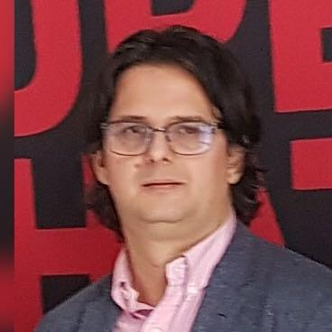

Measurements & instrumentation
Measurement systems, uncertainty, data acquisition and signal processing.
Research areas →Electrical engineering · Research · Education
Professor, PhD · Doctoral supervisor
Electrical measurements, intelligent instrumentation systems and power quality. Research and education at the National University of Science and Technology POLITEHNICA Bucharest.

Figures from the supplied professional records; research outputs include books, chapters and articles.
Research interests
Measurement systems, uncertainty, data acquisition and signal processing.
Research areas →Power and energy measurement, non-sinusoidal conditions, smart grids and renewable-energy integration.
Research areas →Biosensors, biomonitoring and signal processing for medical applications.
Research areas →Research & collaboration
International research project
International research project
International research project
Selected publications
Pisla, MA, Enache, BA, Argyriou, V, Sarigiannidis,P, Seritan, GC - Hardware-Accelerated SMV Subscriber: Energy Quality Pre-Processed Metrics and Analysis -ELECTRONICS Volume14Issue16 DOI10.3390/electronics14163297, 2025.
Pisla, MA, Enache, BA, Argyriou, V, Sarigiannidis, P, Voicila, TI, Seritan, GC - High-Speed SMVs Subscriber Design for FPGA Architectures - ELECTRONICS Volume14Issue11 DOI10.3390/electronics14112135, 2025.
Voicila, TI; Enache, BA; Seritan, GC - A HIGH-SPEED MULTI-CHEMISTRY AND MULTI-BATTERY STATE-OF-HEALTH SCREENING SYSTEM FOR RETIRED LITHIUM-ION BATTERIES- UNIVERSITY POLITEHNICA OF BUCHAREST SCIENTIFIC BULLETIN SERIES C-ELECTRICAL ENGINEERING AND COMPUTER SCIENCE Volume87Issue3Page419-436, 2025.
Teaching & academic practice
Electrical measurements, instrumentation and the development of future researchers.